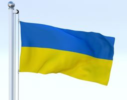
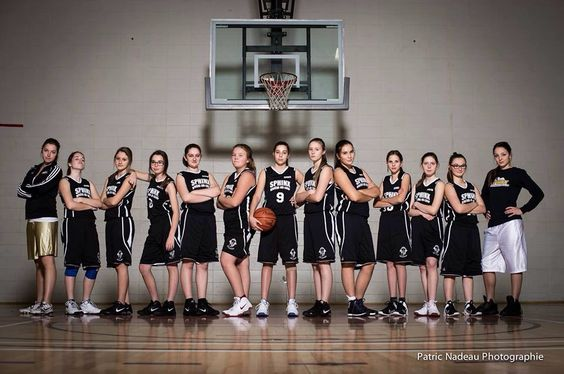
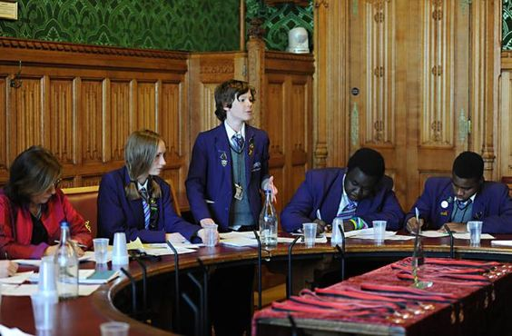

.png)
School Profile
Education has begun to transform rapidly in the recent years, but we believe we are still seeing only the beginnings of change. As an International School in Sri Lanka that is responsible and accountable to our own destiny, we also have to be alert to the changes that are taking place in the education systems around us. From the very inception, Monarch College took a decision to model our curriculum according to the English system of education. Being subjected to this well researched and time-tested curriculum, our students continue to excel both is school and thereafter. The education systems world over are undergoing rapid change. Closer to home, especially in the Far East, we see the emergence of highly competitive systems. As a responsible educational organization, we cannot simply ignore what is happening around and be complacent, especially when we see that the economic dominance is shifting from the west to the east. Our curriculum, therefore, should be considered as one that is not fixed as we make alterations whenever necessary. Monarch College, however, has and always will, strive to offer a balanced curriculum that is aimed at the holistic development of every pupil.--------Vision--------
NON DESISTAS NON EXIERIS
Never give up Never Surrender
--------Mission--------
Adding Value
- Create an educational environment that naturally drives value addition at school as well as at home.
- Develop an educational culture that enhances spiritual, moral, emotional, physical and intellectual development.
- Provide opportunities for every student and teacher to reach his or her highest potential
Education for Tomorrow
- Provide state-of-the-art facilities and resources to meet tomorrow’s needs.
- Provide world class education
Extra Curricular Activities
Monarch College continues to excel in the field of sports. It is fair to say that, in many sports, we have moved beyond the International School arena and are competing with the best of state and private schools. We also see the emergence of a few boys and girls representing Sri Lanka at international events. We want our skilled sports men and women to be competitive and achieve the best for themselves, the school and the country. The strengthening of the Inter House competitions has raised both the interest and skill levels of students in various games. The school offers 6 games and it is heartening to see that Monarch College has been within the top 4 in almost all sports. The Colors Award ceremony is held every year. The following sports are offered at Monarch College.
- Athletics
- Basketball
- Swimming
- Tennis
- Cricket
- Football
Plus there are co-curricular activities along with studies. Students are able to join with below clubs and societies.
- Buddhist Society
- Christian Society
- Islamic Society
- Interact Club
- Debate Society
- Quiz Club
- Community Services